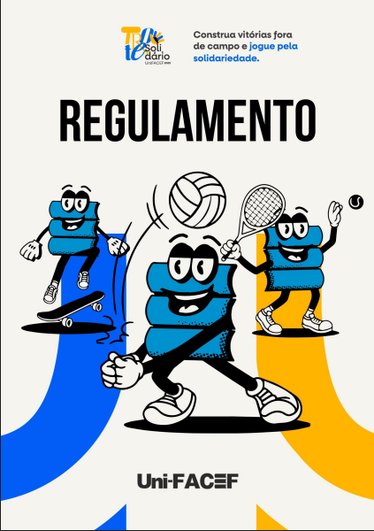

Bem-vindo ao Trote Solidário 2025
Escolha uma opção no menu lateral para saber mais sobre o evento.
CENTRO UNIVERSITÁRIO MUNICIPAL DE FRANCA Uni-FACEF PROJETO - TROTE SOLIDÁRIO 2025 Construa vitórias fora de campo e jogue pela solidariedade
Prof. Dr. José Alfredo de Pádua Guerra Reitor João Baptista Comparini Vice-Reitor Profa. Dra. Sheila Fernandes Pimenta e Oliveira Pró-Reitora Acadêmica
Prof. Dr. Alfredo José Machado Neto
Pró-Reitor de Administração
Prof. Dr. Silvio de Carvalho Neto
Pró-Reitor de Pesquisa e Pós-Graduação
Profa.
Dra. Melissa Franchini Cavalcanti Bandos
Pró Reitora de Extensão Comunitária e Desenvolvimento
Franca
2025